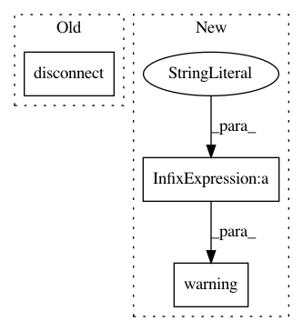

fe7648bf592638b1901bd1f5b0fa6b72115e304d,anvio/tables/taxoestimation.py,TablesForTaxoestimation,taxonomy_estimation_to_congis,#TablesForTaxoestimation#Any#,110
Before Change
self.database = db.DB(self.db_path, utils.get_required_version_for_db(self.db_path))
self.database.insert_many(t.taxonomy_estimation_metagenome_name, possibles_taxonomy)
self.database.disconnect()
def taxonomy_estimation_to_profile(self,possibles_taxonomy):
self.bin_database = db.DB(self.profile_db_path, utils.get_required_version_for_db(self.profile_db_path))
After Change
self.database = db.DB(self.db_path, utils.get_required_version_for_db(self.db_path))
self.database.insert_many(t.taxonomy_estimation_metagenome_name, possibles_taxonomy)
except:
self.run.warning(traceback.print_exc(), header="Anvi\"o fail the enter the result in %s" % self.db_pat, lc="red")
finally:
self.database.disconnect()
def taxonomy_estimation_to_profile(self,possibles_taxonomy):
In pattern: SUPERPATTERN
Frequency: 3
Non-data size: 3
Instances
Project Name: merenlab/anvio
Commit Name: fe7648bf592638b1901bd1f5b0fa6b72115e304d
Time: 2019-08-14
Author: quentin.clayssen@gmail.com
File Name: anvio/tables/taxoestimation.py
Class Name: TablesForTaxoestimation
Method Name: taxonomy_estimation_to_congis
Project Name: thenetcircle/dino
Commit Name: 930f98eab72c07f9d36036fde859978b58605128
Time: 2017-10-18
Author: oscar.eriks@gmail.com
File Name: dino/validation/request.py
Class Name: RequestValidator
Method Name: on_login
Project Name: merenlab/anvio
Commit Name: fe7648bf592638b1901bd1f5b0fa6b72115e304d
Time: 2019-08-14
Author: quentin.clayssen@gmail.com
File Name: anvio/tables/taxoestimation.py
Class Name: TablesForTaxoestimation
Method Name: taxonomy_estimation_to_profile